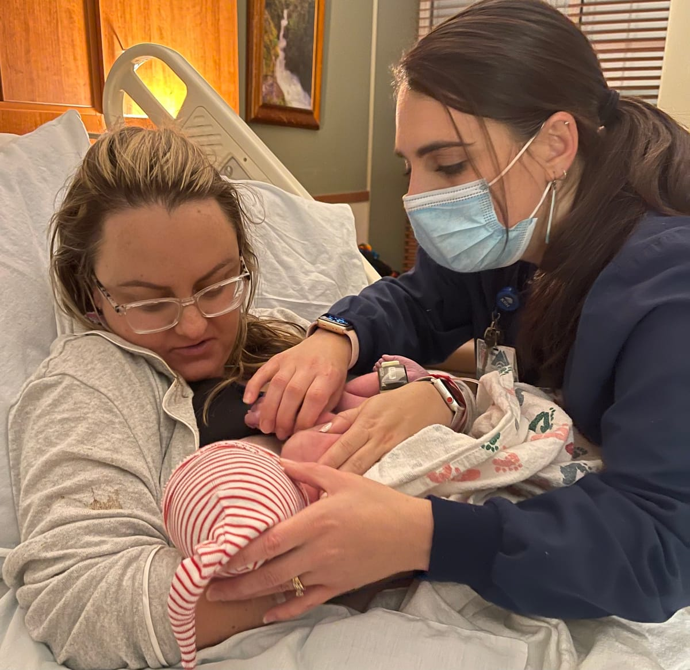

Battlefield of the Mother
For centuries soldiers have gone into battle and women have gone into motherhood with equal courage. Like the battlefield, birth is bloody and intense. Women shouldn’t have to face it alone, and thank
Read more →